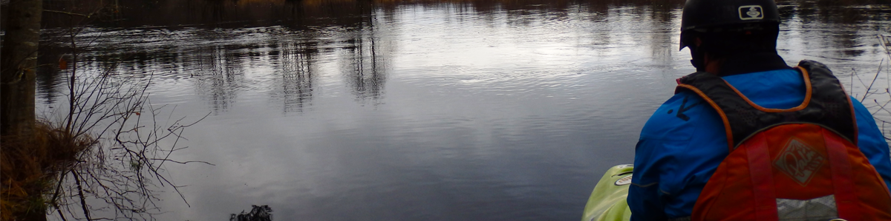
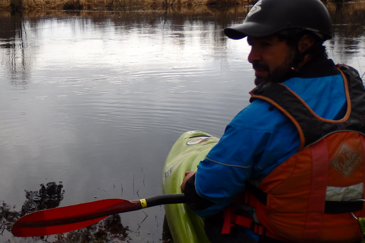
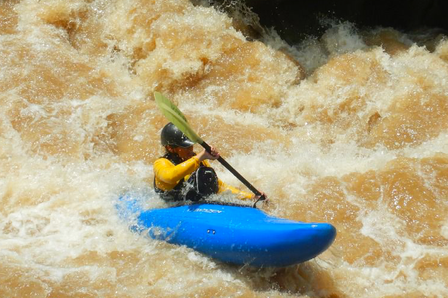
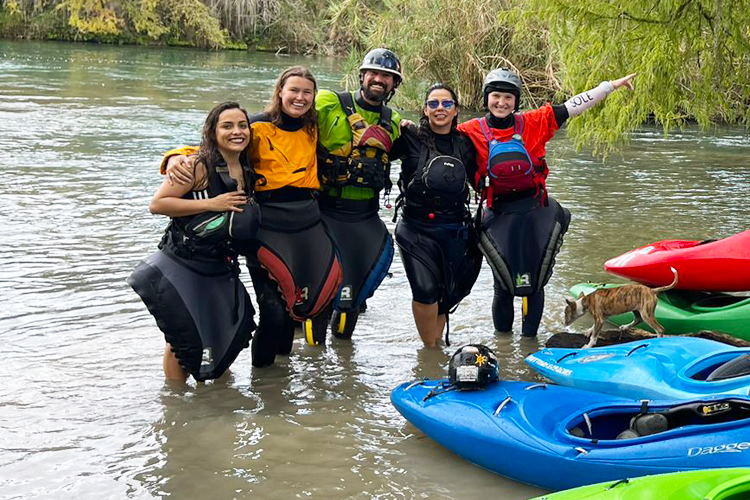

Uno de los deportes extremos más emocionantes que existen en el mundo. El cual te permite recorrer lugares inaccesibles para la mayoría de las personas, como recorrer cañones, cascadas y ríos voluminosos.
Pero para ello, se debe empezar con lo básico, por esto Ríos Mexicanos te ofrece cursos de kayak de río para principiantes y para intermedios, complementándolos con el Club de Río de Ríos Mexicanos que te permite evolucionar y poner a prueba tus habilidades al visitar otros ríos con varias secciones de río en diferentes partes de México, con la posibilidad de poder llevarte a diferentes partes del mundo como Costa Rica, Italia, Chile, Eslovenia, Nepal o Noruega, rodeándote de los mejores kayaqueros de estos lugares.
¡Ríos Mexicanos es tu entrada al mundo del kayak de río!

Esta opción es para aquellos que quieren aprender o que solo han tenido un par de lecciones anteriores.
Este curso de medio día está enfocado en crear confianza al sentarse en un kayak de río, por lo que conlleva las técnicas básicas de remo, hidrografía, lenguaje de río y autorescate.
En los 6 kilómetros de descenso de río habrá sitios donde se practicaremos cruce de río, lectura de río y sobre todo el disfrute de estar con en el río.
La actividad se da en un ambiente de aire libre, por ello te recomendamos que te prepares con ropa cómoda y fresca para caminar en el campo, así como ropa para protegerte del sol.
Traer una muda de ropa y calzado para mojar en el río, recomendamos ropa sintética.
Traer agua y snack, así como informar si tienes alguna condición especial de salud.
El recorrido te incluye equipo certificado para la actividad, el cual se compone de:

Este es el inicio del segundo nivel, ya que exige mayor control sobre el kayak y técnicas de remado.
Son 13 kilómetros de río con rápidos clase II y III, pero también tiene lugares donde se práctica las técnicas anteriores, así como la posibilidad de empezar a jugar con las olas y las rocas.
Para este nivel es necesario aprender el rol, la técnica para desvolcar el kayak, sin tener que abandonar el kayak.
Este recorrido puede llevar varias horas en el río.
La actividad se da en un ambiente de aire libre, por ello te recomendamos que te prepares con ropa cómoda y fresca para caminar en el campo, así como ropa para protegerte del sol.
Traer una muda de ropa y calzado para mojar en el río, recomendamos ropa sintética.
Traer agua y snack, así como informar si tienes alguna condición especial de salud.
El recorrido te incluye equipo certificado para la actividad, el cual se compone de:

El Club de Río de Ríos Mexicanos es para ti que no tienes con quien compartir estas actividades y buscas un grupo, o que te gustaría realizar más seguido estas actividades y tenerlo como un hobbie.
Al ser miembro se te informará de viajes especiales a otros ríos, a expediciones no comerciales o tan solo ir al río a disfrutar junto con más personas de río o River runners.
Asimismo, aprenderás de hidrografía, lenguaje de río y autorescate.
¡Únete a una comunidad internacional!
Si te gustaría el navegar ríos, explorar más secciones de río, remar, acampar y ser parte de estilo de vida, esta es tu oportunidad.
Al ser miembro te mandamos información de expediciones que organizamos ya sean comerciales o privadas a diferentes ríos en México, como en Veracruz, Chiapas, Oaxaca, Guerrero, Morelos, San Luis Potosí y muchos más.
También tendrás la oportunidad de realizar cursos de rescate en áreas naturales y primeros auxilios con certificación nacional e internacional.
¿Tienes tu propio equipo y solo buscas con quien ir al río? Eres bienvenido a todos nuestros recorridos y expediciones, solo contáctanos.
Pero como todas las actividades se debe cubrir seguro en caso de accidente, refrigerio, traslado del Punto de Encuentro al río y del río al Punto de Encuentro.
El precio depende de la actividad y del tipo de recorrido, pero siempre se detallará cuando se comparte la información.
Contactanos para mayor información, con gusto te ayudaremos a satisfacer cualquier duda que tengas.
A tu recorrido le puedes agregar otros beneficios como la visita a un balneario o una carnita asada.
Organizamos paquetes especiales para escuelas y empresas.